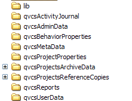

|
QVCS-Enterprise Files and DirectoriesThere are a number of directories and files that QVCS-Enterprise client and server use. These files are located in the qvcsBehaviorProperties, qvcsMetaData, qvcsProjectProperties, and qvcsProjectsArchiveData directories that are located beneath the directory where you install the QVCS-Enterprise jar files.  Many of these files are created after running the client or server. Files in the lib directoryThe lib directory contains 3rd party library files (.jar files) that are needed for the client and/or server. Files in the logs directoryFiles in the qvcsActivityJournal directoryThis directory is created on the server. It contains a single file: qvcs.server.journal. This journal file contains a chronological record of activities performed by the server. The server continually appends to this file as activities are performed. You can safely delete this file (when the server has been stopped). It is meant to serve as a record of server activities. The server never reads from this file. Files in the qvcsBehaviorProperties directoryThe qvcsBehaviorProperties directory contains:
The qvcs.postgresql.connection.properties file is a property file that defines the connection to a Postgresql database. In order to use a Postgresql database server, you need to create the qvcse user, and database, and schema on a suitable Postgresql server. You can use the postgres_qvcsos410_prod_script.sql SQL script located in the qvcsos/testenterprise directory of the git repository to create these using the psql tool. Files in the qvcsMetaData directoryThe files contained on the client in the qvcsMetaData directory look like:
The qvcs.workfileDigestStore.username.dat will exist only on client machines. It serves a similar purpose as the archive digest store described above except that it caches digest values for the workfiles of an individual user. The username portion of the file name defines the name of the user that it is associated with. In addition to the digest value for the workfile, it also captures that timestamp associated with the creation of the workfile; i.e. when QVCS-Enterprise 'gets' a workfile copy from the server, it knows when that happens. The workfile digest store has this timestamp information in it as well. That timestamp information combined with the digest value allows the QVCS-Enterprise client to deduce the value to display in the 'File Status' column. If you delete this file, then QVCS-Enterprise can still compare the digest values to determine if the workfile is different than the most recent archive revision, but if the file is different, it cannot deduce whether the file has been edited locally, or if the file is out of date because a new revision has been checked in. In the case that the timestamp information is missing from this file, and the file is different than the tip revision of the archive, then the 'File Status' column will display just a value of 'Different', since nothing more can be known. As you perform 'gets', the timestamp information is added to the store, and the 'File Status' column can become more accurate. Files in the qvcsReports directoryThis directory is created on the client. This directory contains the .html files for any reports generated on the client. The QVCS client creates files in this directory when you select the Reports/Generate Report menu option. You have to manually delete these report files whenever you wish; the client application will not delete these files. Files in the qvcsServerProperties directoryFiles in the qvcsUserData directoryThis directory is created on the client. There are 8 separate types of files contained in the qvcsUserData directory:
The currentWorkfileDigestStore.User name.dat binary file will exist only on client machines. It serves a similar purpose as the archive digest store described above except that it caches digest values for the workfiles of an individual IDE user. The username portion of the file name defines the name of the user that it is associated with. In addition to the digest value for the IDE workfile, it also captures that timestamp associated with the creation of the workfile; i.e. when QVCS-Enterprise 'gets' a workfile copy from the server for the IDE, it knows when that happens. This digest store allows the IDE to compute a useful workfile status for use within the IDE implementation. The qvcs.fileGroupStore.User name.dat binary file contains the file groups that user User name has defined. The qvcs.filterStore.User name.dat file contains the filters that user User name has defined. This is a binary file. If you delete this file, the filter definitions will revert back to the built-in filters: "All files", "All files (including obsolete files), "C++ and .h source files", and "Java source files". This file gets populated with data as you define new filters using the "Maintain Filter Collections" dialog that is available from the "View/Maintain Filters" menu command. This file is only used by the client application, and will appear only on machines where you run the client application. The qvcs.username.User name.properties file is a general properties file for capturing settings associated with the User name user. It captures such things as screen size and screen location so when the client application is started it will have the same size and location as when it was last run. It also captures the workfile location that the User name user associates with a given project. The qvcs.viewUtilityStore.User name.dat binary file contains the paths to the utilities that user User name has associated with files that have a given file extension. This is used on Linux boxes to define the utility that should be used to view a file. The qvcs.visualCompare.User name.properties file captures settings that define the behavior for the visual comparison tool included with QVCS-Enterprise. You can edit the settings manually by editing this file, or you can change the settings captured in this file by clicking on the properties toolbar button in the built-in visual compare tool. There are 4 properties that you may wish to change:
All four properties default to a value of NO. You can change these values by clicking on the properties toolbar button on the built-in visual compare tool. Changing their respective values to YES will change the results of the visual compare the next time it is used. Note that these settings do not affect the comparison that is made as part of checking in revisions to the server. It's also useful to know that all visual comparisons are performed at the client; they are not performed on the server. |
| For the source code, see https://github.com/jimv39/qvcsos |